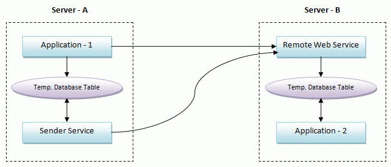
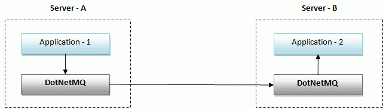
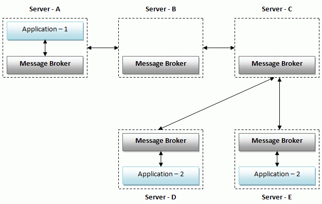
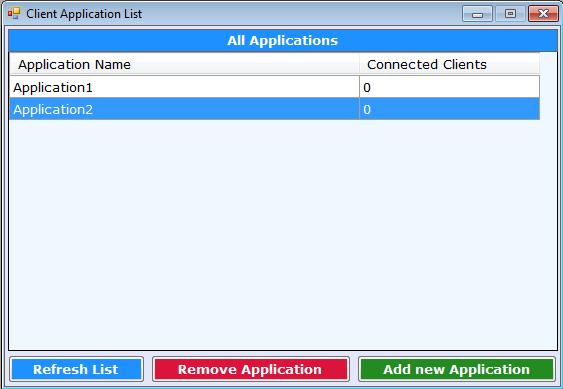
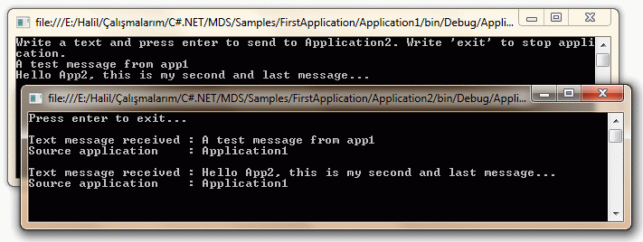
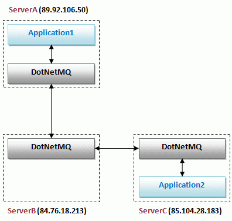
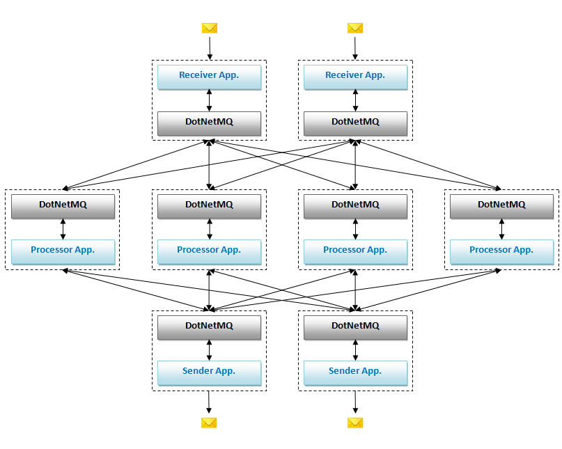
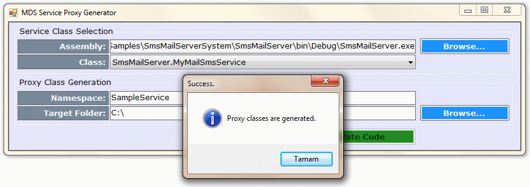

Figure - 8: DotNetMQ Server Graph managing.
In this article, I will introduce a new and independed open source Message Queue system that is entirely build in C# and .NET framework 3.5. DotNetMQ is a message broker that has several futures including guaranteed delivering, routing, load balancing, server graphs... so on. I will start by explaining messaging concepts and need for message brokers. Then I will examine what DotNetMQ is and how to use it.
Messaging is a way of asynchronous communication of applications running on same or different machines with reliable delivery. Programs communicate by sending packets of data called messages to each other [1].
A message may be a string, a byte array, an object... etc. Typically, a sender (producer) program creates a message and pushes it to a message queue and a receiver (consumer) program gets the message from queue and processes it. Sender and receiver programs don’t have to be running at the same time, since messaging is an asynchronous process. This is called loosely coupled communication.
On the other hand, a web service method call (Remote method invocation) is a type of tightly coupled and synchronous communication (Both of two applications have to be running and available during whole communication. If web service is offline or an error occures during method call, client application gets an exception).
Figure – 1: Simplest messaging of two applications.
In the figure above, two applications communicate over a message queue in a loosely coupled manner. If receiver consumes messages slower than sender produces it, message count on queue will increase. Also, receiver may be offline while sender is sending messages. In this situation, receiver gets messages from queue when it becomes online (when it starts and joins the queue).
Message Queues are typically provided by Message Brokers. A Message Broker is a standalone application (service) that other applications connect it and send/receive messages. Message Broker is respobsible to store messages until a receiver receives them. A Message Broker can route messages accross machines to deliver message to the destination application and can try delivering the message until receiver correctly handles it. Message Broker is sometimes called as Message Oriented Middleware (MOM) or simply Message Queue (MQ).
DotNetMQ is an open source Message Broker that has several features:
I prefered to name DotNetMQ as MDS (Message Delivery System) when first creating it. Because it is designed not to be a message queue only, but also a system that delivers messages directly to applications and an environment that provides a framework to built application services. I called it as DotNetMQ since it is entirely developed using .NET and the DotNetMQ name is more memorable. So, it’s original name (and internal project name) is MDS and the applications have many classes with prefix MDS.
First, i will demonstrate a simple situation where a message broker is needed.
In my experiences in business life, i observed too bad and not uncommon asynchronous enterprise application integration solutions. Usually there is an application runs on a server, performs some tasks and produces a data, then sends the result data to another application on another server. Second application performs another tasks on data or evaluates the result (Servers are on same network or connected over internet). Also, message data must be persistent. Even if remote application is not working or network is not available, message must be delivered on first chance.
Let’s look at the design at the figure below.

Figure – 2: A bad solution to integrate applications.
Application – 1 and Application – 2 are executable applications (or Windows services) and Sender Service is a Windows service. Application – 1 performs some task, produces a data and calls a Remote Web Service method on Server – B to transmit data. This web service inserts data into a database table. Application – 2 periodically checks table for new incoming data rows and process them if exists (and deletes them from table or marks them as processed to do not process same data again).
If an error occurs during web service call or while processing data in web service, data must not be lost and must be sent later. However, Application – 1 has other tasks to do, so it can not try to send data again and again. It simply inserts data into a database table. Another windows service (or a thread in Application – 1, if application always runs) checks this table periodically and tries to send data to web service until data is successfully sent.
This scenario is really reliable (message are guaratied to be delivered) but worst efficient way of communicating two applications. This solution has very critical problems:
Message Brokers does all job and takes all resposibility to deliver messages to remote application in most efficient way. Same application integration using DotNetMQ is shown in the figure below.

Figure – 3: Simple messaging by using DotNetMQ.
DotNetMQ is ready and standalone Windows service that is running on both of Server – A and Server – B. Thus, it is just needed to write codes to communicate with DotNetMQ. Using DotNetMQ Client Library, it is very easy and fast to connect and send/receive messages to/from DotNetMQ service. Application – 1 prepares message, sets destination and passes message to DotNetMQ Broker. DotNetMQ brokers will deliver the message to Application – 2 in most efficient and fastest way.
It is clear to see that there is a need for Message Brokers to integrate applications. I searched web, read books to find a free (and open source is prefered if available) Message Broker that is easy to use with .NET. Let’s talk about what I found;
You see that there is no Message Broker that is developed entirely in .NET in the list above.
From a user perspective, I just want that I pass “message data, destination server and application name” to my local Broker. I am not interested in the rest. It routes message over network how many times it requires and delivers message to my destination application on the destination server. My messaging system must provide this simplicity for me. This was my first start point and I evaluated Message Borkers according to that point. The figure below shows what I want.

Figure – 4: Automatic Routing messages in a Message Broker servers graph.
Application – 1 passes a message to Message Broker in local server (Server – A):
Server – A has not direct connection to Server – D. So, Message Brokers forwards the message over servers (message is transmitted through Server – A, Server – B, Server – C and Server – D sequentially) and message finally reaches to Message Broker in Server – D to delivery message to Application – 2. Note that there is another instance of Application – 2 is running on Server – E, but it does not receive this message, since the destination server of the message was Server – D.
DotNetMQ provides this functionality and simplicity. It finds the best (shortest) path from source server to destination server on graph and forwards the message.
After this comprehensive introduction, let’s see how to use DotNetMQ in practice.
There is no auto install for now but it is very easy to install DotNetMQ. When you download and unzip the download file from top of the article, you will see the Binaries folder. Just copy everything from here to C:\Program Files\DotNetMQ\ and run INSTALL.bat. That's all.
You can check windows services to see if DotNetMQ is installed and working.
Let’s see DotNetMQ in action. To make first application most simple, I assume that there are two console applications running on same machine (In fact (as we see later in this document) there is not significant difference if applications are in different machines. The only difference is to properly set the name of the destination server in the message).
Application1: Gets a string message from user and sends it to Application2.
Application2: Writes incoming messages to console screen.
It is needed to register applications for one time to use with DotNetMQ. It is very simple process. Run DotNetMQ Manager (MDSManager.exe in DotNetMQ program folder (Default C:\Program Files\DotNetMQ\)), open Application List from Applications menu. Click Add New Application button and enter a name for application.
Add Application1 and Application2 applications to DotNetMQ as described above. Finally, your application list must be like below.

Figure – 5: Application List screen of DotNetMQ Manager tool.
This screen shows registered applications to DotNetMQ. Connected Clients column shows count of instances of the application that are currently connected to DotNetMQ. It is not needed to restart DotNetMQ because of changes in this screen.
Create a new console application with name Application1 in Visual Studio and write the fallowing codes.
using System; using System.Text; using MDS.Client; namespace Application1 { class Program { static void Main(string[] args) { //Create MDSClient object to connect to DotNetMQ //Name of this application: Application1 var mdsClient = new MDSClient("Application1"); //Connect to DotNetMQ server mdsClient.Connect(); Console.WriteLine("Write a text and press enter to send to Application2. Write 'exit' to stop application."); while (true) { //Get a message from user var messageText = Console.ReadLine(); if (string.IsNullOrEmpty(messageText) || messageText == "exit") { break; } //Create a DotNetMQ Message to send to Application2 var message = mdsClient.CreateMessage(); //Set destination application name message.DestinationApplicationName = "Application2"; //Set message data message.MessageData = Encoding.UTF8.GetBytes(messageText); //Send message message.Send(); } //Disconnect from DotNetMQ server mdsClient.Disconnect(); } } }
While creating a MDSClient object, we pass the application name which connects to DotNetMQ. With this constructor, we connect to DotNetMQ on local server (127.0.0.1) with default port number (10905). Overloaded constructors can be used to connect to another server and port.
CreateMessage method of MDSClient returns an object with type IOutgoingMessage. MessageData property is the actual data to send to destination application. It is a byte array. So, we are converting user input text to a byte array using UTF8 encoding. DestinationApplicationName and DestinationServerName properties are used to set destination address of message. If we don’t specify destination server, it is assumed as local server. Finally, we send the message.
Create a new console application with name Application2 in Visual Studio and write the fallowing codes.
using System; using System.Text; using MDS.Client; namespace Application2 { class Program { static void Main(string[] args) { //Create MDSClient object to connect to DotNetMQ //Name of this application: Application2 var mdsClient = new MDSClient("Application2"); //Register to MessageReceived event to get messages. mdsClient.MessageReceived += MDSClient_MessageReceived; //Connect to DotNetMQ server mdsClient.Connect(); //Wait user to press enter to terminate application Console.WriteLine("Press enter to exit..."); Console.ReadLine(); //Disconnect from DotNetMQ server mdsClient.Disconnect(); } /// <summary> /// This method handles received messages from other applications via DotNetMQ. /// </summary> /// <param name="sender"></param> /// <param name="e">Message parameters</param> static void MDSClient_MessageReceived(object sender, MessageReceivedEventArgs e) { //Get message var messageText = Encoding.UTF8.GetString(e.Message.MessageData); //Process message Console.WriteLine(); Console.WriteLine("Text message received : " + messageText); Console.WriteLine("Source application : " + e.Message.SourceApplicationName); //Acknowledge that message is properly handled and processed. So, it will be deleted from queue. e.Message.Acknowledge(); } } }
Creating MDSClient object is similar to Application1 but the application name is Application2. To receive messages for an application, it is needed to register to MessageReceived event of MDSClient. Then we connect to DotNetMQ and stay connected until user presses enter.
When a message is sent to Application2, MDSClient_MessageReceived method handles the event. We get the message from the Message property of MessageReceivedEventArgs. Type of message is IIncomingMessage. MessageData property of IIncomingMessage contains the actual message data that is sent by Application1. Since it is a byte array, we are converting it to string using UTF8 encoding. We are writing the message text that is sent by Application1 to console screen.

Figure – 6: Application1 sends two messages to Application2 over DotNetMQ.
After processing an incoming message, it is needed to Acknowledge the message. That means the message is properly received and correctly processed. So, DotNetMQ removes message from message queue. We can also reject the message using Reject method (if we can not process message on an error case). In this situation, message turns back to the message queue and will be sent later to destination application (or it will be sent to another instance of Application2 on same server if exists). This is a powerfull mechanism of DotNetMQ system. Thus, it is guarantied that the message can not be lost and it is absolutely processed. If you do not acknowledge or reject a message, it is assumed as rejected. So, even if your application crashes, your message is sent back to your application later.
Before send a message, you can set the Transmit Rule of message like that:
message.TransmitRule = MessageTransmitRules.NonPersistent;
There are three types of transmit rule:
So, since default transmit rule is StoreAndForward, let’s try that:
Even if you stop DotNetMQ service from Windows services after sending messages from Application1, your messages don’t be lost. That is the persistence.
By default, an application can send and receive messages using MDSClient (CommunicationWays.SendAndReceive). If an application doesn’t want to receive messages, it must to set CommunicationWay property to CommunicationWays.Send. This property can be changed before connection or during communication with DotNetMQ.
By default, MDSClient automatically reconnects to DotNetMQ if it disconnects. So, even if you restart DotNetMQ, it is not needed to restart your applications that are connected to DotNetMQ. You can set ReConnectServerOnError property to false to disable auto reconnect.
You can configure DotNetMQ in two ways: Using XML settings files or DotNetMQ manager (windows forms application). Here, I will show both of two approaches. Some of configurations require to restart DotNetMQ while others do not.
You may run DotNetMQ on only one server. In this situation, there is no need to configure anything for servers. But if you want to run DotNetMQ on more than one server and make them communicate with others, you must define your server graph.
A server graph consist of two or more nodes. Each node is a server that has an IP address and TCP port (that is used by DotNetMQ). You can configure/design server graph by using DotNetMQ Manager.
Figure - 8: DotNetMQ Server Graph managing.
In the figure above, you see a server graph that consist of five nodes. The red node represents this server (This server means the server that you are connected with DotNetMQ Manager). A line means that there is a connection (and they can send/receive messages) between two nodes (They are called adjacent nodes). Name of the server/node in graph is important and used when sending messages to the server.
You can double-click a server in graph to change it's properties. To connect two server, hold Ctrl, click first one than click the second one (To disconnect, do same thing again). You can set a server as this server by right clicking and selecting Set as this server. You can also delete a server from graph or add a new server by right click menu. Lastly, you can move servers by dragging.
After designing your server graph, you must click Save & Update Graph button to save changes. Changes are saved to MDSSettings.xml file in your DotNetMQ installation folder. You must restart DotNetMQ to apply the changes.
For the server graph above, the corresponding MDSSettings.xml settings are shown below:
<?xml version="1.0" encoding="utf-8"?> <MDSConfiguration> <Settings> ... </Settings> <Servers> <Server Name="halil_pc" IpAddress="192.168.10.105" Port="10099" Adjacents="emre_pc" /> <Server Name="emre_pc" IpAddress="192.168.10.244" Port="10099" Adjacents="halil_pc,out_server,webserver1,webserver2" /> <Server Name="out_server" IpAddress="85.19.100.185" Port="10099" Adjacents="emre_pc" /> <Server Name="webserver1" IpAddress="192.168.10.263" Port="10099" Adjacents="emre_pc,webserver2" /> <Server Name="webserver2" IpAddress="192.168.10.44" Port="10099" Adjacents="emre_pc,webserver1" /> </Servers> <Applications> ... </Applications> <Routes> ... </Routes> </MDSConfiguration>
Surely, this configuration is made according to your real network. You must install DotNetMQ on all servers in the graph. Also, you must congifure same graph on all servers (You can easily copy server nodes from XML to other servers).
DotNetMQ uses short path algorithm to send messages (If no manual route is defined in settings file). Consider an Application A that is running on halil_pc and sending a message to Application B on webserver2. The path is simply: Application A -> halil_pc -> emre_pc -> webserver2 -> Application B. halil_pc knows the next forwarding server (emre_pc) by using the server graph definition.
Lastly, MDSSettings.design.xml file contains server design informations (locations of nodes on screen). This is just needed in server graph window in DotNetMQ manager and not needed for runtime of DotNetMQ.
As shown Figure - 5, you can add/remove applications those are using DotNetMQ as message broker. It is not needed to restart DotNetMQ for this changes. Application settings are also saved to MDSSettings.xml file as shown below.
<?xml version="1.0" encoding="utf-8"?> <MDSConfiguration> ... <Applications> <Application Name="Application1" /> <Application Name="Application2" /> </Applications> ... </MDSConfiguration>
An application must be in this list to be able to connect to DotNetMQ. If you directly change XML file, you must restart DotNetMQ server.
A usable feature of DotNetMQ is routing. Routing settings (for now) are configured only in xml settings file (MDSSettings.xml). Here, you see two types of routing in the settings file below:
<?xml version="1.0" encoding="utf-8" ?> <MDSConfiguration> ... <Routes> <Route Name="Route-App2" DistributionType="Sequential" > <Filters> <Filter DestinationServer="this" DestinationApplication="Application1" /> </Filters> <Destinations> <Destination Server="Server-A" Application="Application1" RouteFactor="1" /> <Destination Server="Server-B" Application="Application1" RouteFactor="1" /> <Destination Server="Server-C" Application="Application1" RouteFactor="1" /> </Destinations> </Route> <Route Name="Route-App2" DistributionType="Random" > <Filters> <Filter DestinationServer="this" DestinationApplication="Application2" /> <Filter SourceApplication="Application2" TransmitRule="StoreAndForward" /> </Filters> <Destinations> <Destination Server="Server-A" Application="Application2" RouteFactor="1" /> <Destination Server="Server-B" Application="Application2" RouteFactor="3" /> </Destinations> </Route> </Routes> ... </MDSConfiguration>
A Route node has two attribute: Name is a user-friendly name of the Route entry (does not effect routing) and DistributionType is strategy of the routing. There are two types of routing strategy:
Filters are used to decide to use this route for a message. If properties of a message are suitable for one of the filters, message is routed. There are five conditions (xml attribute) to define a filter:
If one or more condition is not declared, it is not cosidered while filtering messages. So, if all conditions are empty (or not even declared), all messages are fit to this filter. A filter is selected for a message, only if all conditions are fit to the message. If a message is proper for (at least) one of the filters of a route, the route is selected and used.
Destinations are used to route messages to other servers. One of the destinations is selected according to DistributionType property of the Route entry (explained before). A destination must define three attributes:
You must restart DotNetMQ after changing routes.
DotNetMQ currently supports three storage type: SQLite (default), MySQL and Memory. You can change storage type in MDSSettings.xml file.
<?xml version="1.0" encoding="utf-8"?> <MDSConfiguration> ... <Settings> <Setting Key="ThisServerName" Value="halil_pc" /> <Setting Key="StorageType" Value="SQLite" /> </Settings> ... </MDSConfiguration>
Storage types must be one of the fallowing values:
Here, there is a sample configuration to use MySQL-ODBC storage type:
<Settings> <Setting Key="ThisServerName" Value="halil_pc" /> <Setting Key="StorageType" Value="MySQL-ODBC" /> <Setting Key="MySQLConnectionString" Value="uid=root;server=localhost;driver={MySQL ODBC 3.51 Driver};database=mds" /> </Settings>
You must also create a database named mds in MySQL. You can find two files in Setup folder (in DotNetMQ installation folder) those are needed to create table and stored procedure those are used by DotNetMQ.
There is also another setting to define the name of the current/this server (ThisServerName). It must be one of the servers in Servers section. If you use to DotNetMQ manager to edit your servers graph, it is automatically set.
Sending a message to an application on a remote server is easy as sending a message to an application on current server.
Let's consider the network below.

Figure - 8: Messaging of two applications over network with DotNetMQ.
There is an application (Application1) is running on ServerA wants to send a message to another application (Application2) on ServerC and there is not direct connection between ServerA and ServerC because of firewall rules. Let's change the applications we developed in First Applications section.
There is not even a single change in Application2. Just run Application2 in ServerC and wait incoming messages.
There is a minor change in Application1 on sending message. It must set DestinationServerName of message as ServerC.
var message = mdsClient.CreateMessage(); message.DestinationServerName = "ServerC"; //Set destination server name here! message.DestinationApplicationName = "Application2"; message.MessageData = Encoding.UTF8.GetBytes(messageText); message.Send();
That's all. You do not have to know where the ServerC is, is a direct connection to ServerC... They are all defined in DotNetMQ settings. Note that if you do not set DestinationServerName of a message, it is assumed as current/this server and DotNetMQ sends message to the application on same server. Also, if you define necessary routings, you don't have to set destination server, it is routed by DotNetMQ automatically.
Surely, DotNetMQ settings must properly set according to server connections (server graph) and Application1 and Application2 must be registered to DotNetMQ server as described in Configuring DotNetMQ section.
As you see until now, DotNetMQ can be used to build distributed, load balanced application systems. In this section, I'll discuss a real life scenario: A distributed SMS process system.
Assume that there is a short message (SMS) service that is used for a polling a singing competition. After all competitors sing their songs, audience send messages like "VOTE 103" to our SMS service to vote their favourite competitor (103 is a sample code to vote a specific competitor). And assume that this polling is made in just 30 minutes and approximately five million people will send SMS to our service.
We will receive every message, process it (parse SMS text, update database to increase vote count of competitor) and send a comfirmation message to the sender of the SMS. We must receive messages from two server, process messages on four servers and send comfirmation messages by two servers. We have totally eight servers. Let's see our complete system diagram:

Figure - 9: A Distributed SMS processing system (Click to enlarge).
There are three types of applications: Receiver, Processor and Sender. You can use DotNetMQ as message queue and load balancer in such a scenario to build a distributed, scalable message processing system by configuring server graph and routes as described in Configuring DotNetMQ section.
In most case, an application sends a message to another application and gets a response message. DotNetMQ has built-in support for this type of messaging. Think that a service that is used to query a stock status. Simply there are two types of messages:
[Serializable] public class StockQueryMessage { public string StockCode { get; set; } } [Serializable] public class StockQueryResultMessage { public string StockCode { get; set; } public int ReservedStockCount { get; set; } public int TotalStockCount { get; set; } }
A simple Stock server code is shown below.
using System; using MDS; using MDS.Client; using StockCommonLib; namespace StockServer { class Program { static void Main(string[] args) { var mdsClient = new MDSClient("StockServer"); mdsClient.MessageReceived += MDSClient_MessageReceived; mdsClient.Connect(); Console.WriteLine("Press enter to exit..."); Console.ReadLine(); mdsClient.Disconnect(); } static void MDSClient_MessageReceived(object sender, MessageReceivedEventArgs e) { //Get message var stockQueryMessage = GeneralHelper.DeserializeObject(e.Message.MessageData) as StockQueryMessage; if (stockQueryMessage == null) { return; } //Write message content Console.WriteLine("Stock Query Message for: " + stockQueryMessage.StockCode); //Get stock counts from a database... int reservedStockCount; int totalStockCount; switch (stockQueryMessage.StockCode) { case "S01": reservedStockCount = 14; totalStockCount = 80; break; case "S02": reservedStockCount = 0; totalStockCount = 25; break; default: //Stock does not exists! reservedStockCount = -1; totalStockCount = -1; break; } //Create a reply message for stock query var stockQueryResult = new StockQueryResultMessage { StockCode = stockQueryMessage.StockCode, ReservedStockCount = reservedStockCount, TotalStockCount = totalStockCount }; //Create a MDS response message to send to client var responseMessage = e.Message.CreateResponseMessage(); responseMessage.MessageData = GeneralHelper.SerializeObject(stockQueryResult); //Send message responseMessage.Send(); //Acknowledge the original request message. So, it will be deleted from queue. e.Message.Acknowledge(); } } }
Stock server listen incoming StockQueryMessage objects and sends StockQueryResultMessage to the sender. To be simple, I did not selected stocks from a database. A response message is created by CreateResponseMessage() method of incoming message. Lastly, message is acknowledged after response is sent. Now, I will show a simple stock client code to get a stock information from server:
using System; using MDS; using MDS.Client; using MDS.Communication.Messages; using StockCommonLib; namespace StockApplication { class Program { static void Main(string[] args) { Console.WriteLine("Press enter to query a stock status"); Console.ReadLine(); //Connect to DotNetMQ var mdsClient = new MDSClient("StockClient"); mdsClient.MessageReceived += mdsClient_MessageReceived; mdsClient.Connect(); //Create a stock request message var stockQueryMessage = new StockQueryMessage { StockCode = "S01" }; //Create a MDS message var requestMessage = mdsClient.CreateMessage(); requestMessage.DestinationApplicationName = "StockServer"; requestMessage.TransmitRule = MessageTransmitRules.NonPersistent; requestMessage.MessageData = GeneralHelper.SerializeObject(stockQueryMessage); //Send message and get response var responseMessage = requestMessage.SendAndGetResponse(); //Get stock query result message from response message var stockResult = (StockQueryResultMessage) GeneralHelper.DeserializeObject(responseMessage.MessageData); //Write stock query result Console.WriteLine("StockCode = " + stockResult.StockCode); Console.WriteLine("ReservedStockCount = " + stockResult.ReservedStockCount); Console.WriteLine("TotalStockCount = " + stockResult.TotalStockCount); //Acknowledge received message responseMessage.Acknowledge(); Console.ReadLine(); //Disconnect from DotNetMQ server. mdsClient.Disconnect(); } static void mdsClient_MessageReceived(object sender, MessageReceivedEventArgs e) { //Simply acknowledge other received messages e.Message.Acknowledge(); } } }
In the sample above, TransmitRule is selected as NonPersistent to show a sample usage. Surely, you can send StoreAndForward (persistent) messages. Here, a sample screenshot of running applications:

Figure - 10: Request/Reply style messaging applications.
SOA (Service-Oriented Architecture) is a popular concept for many years. Web services and WCF is two major solutions to SOA. Generally, it is not expected to support SOA from a Message Queue system. Also messaging is an asynchronous and loosely coupled process while a web service method call is typically synchronous and tight coupled. Even (as you see in previous sample applications) messaging is not as easy as calling a remote method. But when your message count increases, your application becomes complicated and harder to maintain.
DotNetMQ supports remote method invocation mechanism upon persistent or non-persistent messages. So, you can call a remote method asynchronously that is guarateed to be called!
Here, we will develop a simple service that can be used to send SMS and e-mail. Maybe it is not needed to write a service for sending an email/sms, all applications can do themselves. But think that you have many applications that are sending emails. What if mail server has a problem while sending an email? Application must try until successfully sent email. So, you must build a queue mechanism in your application to try sending email again and again. At a worse case your application may be a short time running application (such as a web service) or must be closed before sending email. But you have to send the email when mail servers come online and mail must not be lost. In this case, you can develop a seperated mail/sms service that will try sending sms/mail until successfully sent.
We first developing the mail/sms service. To do this, we must define a class that is delivered from MDSService base class:
using System; using MDS.Client.MDSServices; namespace SmsMailServer { [MDSService(Description = "This service is a sample mail/sms service.", Version = "1.0.0.0")] public class MyMailSmsService : MDSService { //All parameters and return values can be defined. [MDSServiceMethod(Description = "This method is used send an SMS.")] public void SendSms( [MDSServiceMethodParameter("Phone number to send SMS.")] string phone, [MDSServiceMethodParameter("SMS text to be sent.")] string smsText) { //Process SMS Console.WriteLine("Sending SMS to phone: " + phone); Console.WriteLine("Sms Text: " + smsText); //Acknowledge the message IncomingMessage.Acknowledge(); } //You do not have to define any parameters [MDSServiceMethod] public void SendEmail(string emailAddress, string header, string body) { //Process email Console.WriteLine("Sending an email to " + emailAddress); Console.WriteLine("Header: " + header); Console.WriteLine("Body : " + body); //Acknowledge the message IncomingMessage.Acknowledge(); } // A simple method just to show return values. [MDSServiceMethod] [return: MDSServiceMethodParameter("True, if phone number is valid.")] public bool IsValidPhone([MDSServiceMethodParameter("Phone number to send SMS.")] string phone) { return (phone.Length == 10); } } }
As you see, it is just a regular C# class decorated with attributes. Just MDSService and MDSServiceMethod attributes must be defined and all other attributes are optional (but it is good to write them. We will see soon why they are used). Your service methods must has MDSServiceMethod attribute. If you do not want to expose some of your methods, simply do not write MDSServiceMethod attribute.
We must also acknowledge the message in the service method. Otherwise, the message (that cause this method call) will not deleted from message queue and our method will be called again. We can also reject the message if we can not process it (for example, if mail server is not working and we can not send emails). If we reject the message, it will be sent us later (this is reliability). You can reach to the original message using IncomingMessage property of MDSService class. Also, you can get remote application (that called the service method) informations using RemoteApplication property.
After creating a proper service class, we must create an application to run it. Here, there is a simple console application that runs our MyMailSmsService:
using System; using MDS.Client.MDSServices; namespace SmsMailServer { class Program { static void Main(string[] args) { using (var service = new MDSServiceApplication("MyMailSmsService")) { service.AddService(new MyMailSmsService()); service.Connect(); Console.WriteLine("Press any key to stop service"); Console.ReadLine(); } } } }
As you see, it is just three lines of code to create and run a service. Since MDSService is disposible, you can use a using statement. Also, you can close service manually with Disconnect method of MDSServiceApplication. You can run more than one service on a single MDSServiceApplication using AddService method.
To Develop an application that uses a DotNetMQ service, you must create a service proxy (like web services and WCF). To do this, you can use MDSServiceProxyGenerator tool. First, compile your service project than run MDSServiceProxyGenerator.exe (in DotNetMQ installation folder).

Figure - 11: Generating proxy class for a service in DotNetMQ.
Select your service assembly file (SmsMailServer.exe in this sample project). You can select the service class or generate proxies of all services in given assembly. Enter a namespace and target folder to generate proxy class. After generating proxy class, you can add it to your project.
I will not show internals of this proxy class and you also have not to know it (You can see in source codes, it is a very simple class). Your method/parameter attributes are used to generate code comments in tihs proxy file.
After adding generated proxy class to our project, we can simple send messages to service just like simple method calls:
using System; using MDS.Client; using MDS.Client.MDSServices; using SampleService; namespace SmsMailClient { class Program { static void Main(string[] args) { Console.WriteLine("Press enter to test SendSms method"); Console.ReadLine(); //Application1 is name of an application that sends sms/email. using (var serviceConsumer = new MDSServiceConsumer("Application3")) { //Connect to DotNetMQ server serviceConsumer.Connect(); //Create service proxy to call remote methods var service = new MyMailSmsServiceProxy(serviceConsumer, new MDSRemoteAppEndPoint("MyMailSmsService")); //Call SendSms method service.SendSms("3221234567", "Hello service!"); } } } }
You can also call other methods of the service, get return values as regular method calls. Actually, your method calls are translated to reliable messages. For instance, even if remote application (MyMailSmsService) is not running when SendSms is called, it is called when service become running, so your method calls are also guarantied to be called.
You can change transmit rule for messaging using TransmitRule property of the service proxy. If a service method returns void, it's transmit rule is StoreAndForward as default. If a service method returns a value, method call can not be made reliable (since method call is synchronous and waiting a result), it's rule is DirectlySend.
You can choice any types as method parameters. If it is a primary type (string, int, byte...) there is no need to additional settings but if you want to use your own classes as method parameter, the class must be marked as Serializable since DotNetMQ uses binary serialization for parameters.
Note that you must register MyMailSmsService and Application3 to DotNetMQ before running this sample.
Surely, you can connect to DotNetMQ in a web service since it is also a .NET application. But, what if you want to write a ASP.NET web service method to handle messages for an application (and can reply a message in same context). Web services are suitable for such as Request/Reply style method calls.
DotNetMQ supports ASP.NET web services and can deliver messages to web services. There is a template web service in DotNetMQ solution to accomplish that. It is defined as below:
using System; using System.Web.Services; using MDS.Client.WebServices; [WebService(Namespace = "http://www.dotnetmq.com/mds")] [WebServiceBinding(ConformsTo = WsiProfiles.BasicProfile1_1)] public class MDSAppService : WebService { /// <summary> /// MDS server sends messages to this method. /// </summary> /// <param name="bytesOfMessage">Byte array form of message</param> /// <returns>Response message to incoming message</returns> [WebMethod(Description = "Receives incoming messages to this web service.")] public byte[] ReceiveMDSMessage(byte[] bytesOfMessage) { var message = WebServiceHelper.DeserializeMessage(bytesOfMessage); try { var response = ProcessMDSMessage(message); return WebServiceHelper.SerializeMessage(response); } catch (Exception ex) { var response = message.CreateResponseMessage(); response.Result.Success = false; response.Result.ResultText = "Error in ProcessMDSMessage method: " + ex.Message; return WebServiceHelper.SerializeMessage(response); } } /// <summary> /// Processes incoming messages to this web service. /// </summary> /// <param name="message">Message to process</param> /// <returns>Response Message</returns> private IWebServiceResponseMessage ProcessMDSMessage(IWebServiceIncomingMessage message) { //Process message //Send response/result var response = message.CreateResponseMessage(); response.Result.Success = true; return response; } }
You do not change ReceiveMDSMessage method and must process the message in ProcessMDSMessage method as shown above. Also you must define address of your web service in MDSSettings.xml as shown below. You can also add web services using DotNetMQ management tool.
... <Applications> <Application Name="SampleWebServiceApp"> <Communication Type="WebService" Url="http://localhost/SampleWebApplication/SampleService.asmx" /> </Application> </Applications> ...
There are some test results for messaging in DotNetMQ:
Messaging:
- 10,000 messages in ~25 seconds as persistent (~400 messages/second).
-
10,000 messages in ~3.5 seconds as non-persistent (~2,850 messages/second).
Method Calls (in DotNetMQ Services)
- 10,000 method calls in
~25 seconds as persistent (~400 calls/second).
-
10,000 method calls in
~8.7 seconds as non-persistent (~1,150 calls/second).
Test Platform: Intel Core 2 Duo 3,00 GHz CPU. 2 GB RAM PC. Messages/calls are made between two applications running on same computer.
[1] Book: Enterprise Integration Patterns: Designing, Building, and Deploying Messaging Solutions by Gregor Hohpe, Bobby Woolf (Addison Wesley, 2003).